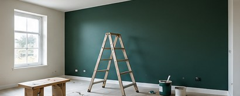

Peinture intérieure & extérieure
Rafraîchissement, décoration et mise en peinture des murs, plafonds et façades.
PEINTURE INTÉRIEURE · EXTÉRIEURE · REVÊTEMENTS
Peinture, décoration et rénovation : imaginez des intérieurs soignés, chaleureux et faits pour durer.

SAVOIR-FAIRE
Une présentation claire des prestations de peinture et de revêtement proposées par l'artisan.
Rafraîchissement, décoration et mise en peinture des murs, plafonds et façades.
Pose de parquet flottant et de revêtements de sol PVC.
Des surfaces habillées avec soin pour transformer l'ambiance d'une pièce.
Interventions après dégâts des eaux, rénovation et peinture de maisons neuves.
L'ATTENTION PORTÉE AUX DÉTAILS
Du choix des couleurs à l'harmonie des matériaux, chaque espace mérite une présentation à la hauteur de vos envies.
AMBIANCES & IDÉES
Ces images d’ambiance illustrent des possibilités de rénovation. Elles ne représentent pas des chantiers réalisés par Eddy Flores.


UN PROJET EN TÊTE ?
Pour échanger directement avec l'artisan, utilisez ses coordonnées professionnelles publiques.